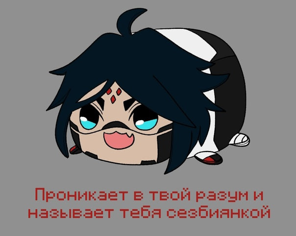

Информация об авторе

Малков Вадим Сергеевич
Студент Института математики, естественных и компьютерных наук ВоГУ, кафедры прикладной математики и информатики.
Данный проект выполнен в рамках учебного задания по дисциплине «Интернет-технологии». Выбор темы обусловлен любовью к родной Вологодской области и желанием популяризировать её культурное наследие через современные цифровые инструменты.
Электронная почта
Мессенджеры
Telegram: @Shikomory